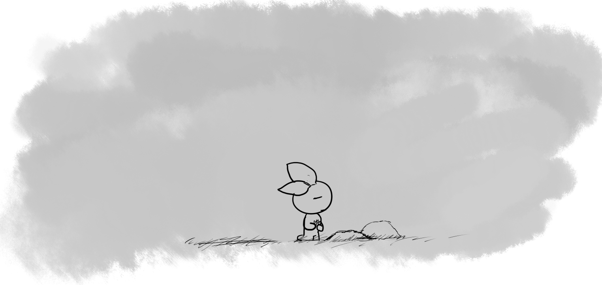
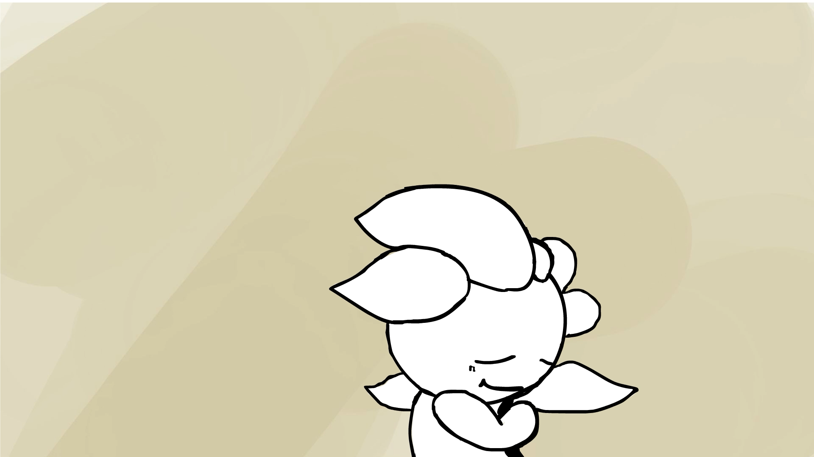

The development of the tech took a certain toll on the team. We built physics, collisions, a level editor, game mechanics, some crude art assets, but still no story, no "bottom."
This was my first draft of the opening cutscene. I wanted to highlight the emotion of the character, give a literal statement: "this onion is SAD". I love a little cheekiness.
The closeup, however, terrified my teammates.
I thought to then widen the shot, and put our character in a scenario: asleep, in a field. I also introduce the glowing goal throughout the game, make the scene even more purposeful by giving the players an idea of what the main action is.
We needed to be building towards a climactic end, as we didn't make an in-game boss. My solution: put in "thought text" throughout the levels.

An earlier version of this shot had a more quiet ending.
I instead took a more connected approach to the game by including the glowing orb.
